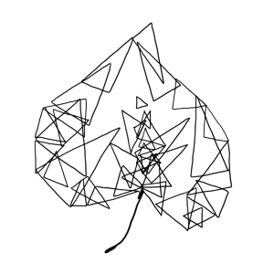

PLAY is a collaborative research initiative by 65 researchers from 45 universities across the United States and Canada. PLAY focuses on recording and revealing the behaviors of infants and mothers during natural activity in their homes, providing an unprecedented corpus of data, and using an innovative, transparent approach to science. The data set will consist of fully transcribed and annotated videos, parent report questionnaires, video tours of the home, digital recordings of ambient noise, and detailed demographic information on 900+ infants and mothers from across the United States. This first-of-its-kind corpus will be shareable and searchable with data spanning domains from language to locomotion, gender to gesture, and object play to emotion.
PLAY is supported by grants from the Office of the Director, National Institutes of Health, (OD), Eunice Kennedy Shriver National Institute for Child Health and Human Development (NICHD), the National Institute of Mental Health (NIMH), and the National Institute on Drug Abuse (NIDA) under R01HD094830-01, the LEGO Foundation, and the Alfred P. Sloan Foundation.
This project is supported by a grant (R01-HD094830) from the Eunice Kennedy Shriver National Institute for Child Health and Human Development. Copyright © 2018- Karen E. Adolph, Catherine Tamis-LeMonda, & Rick O. Gilmore